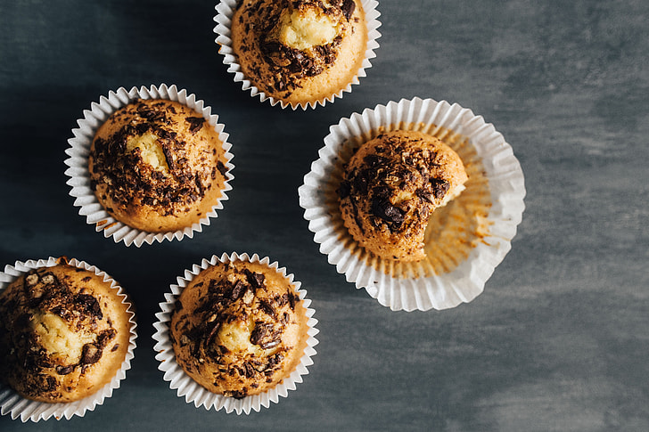

Banana Choco Chip Muffins

Let's Make Banana Choco Chip Muffins; the perfect afternoon snack! This
recipe makes a dozen.
Ingredients:
-
1-½ cups / 375 ml
all-purpose flour
- 1 cup / 250 ml sugar
- 1 teaspoon / 5 ml baking soda
- ½ teaspoon / 2 ml salt
- 3 medium ripe bananas
- 1 large egg, room temperature
- ⅓ cup / 80 ml vegetable oil
- 1 teaspoon / 5 ml vanilla extract
- ½ cup / 125 ml chocolate chips
Tools:
- Large bowl (dry ingredients)
- Medium bowl (wet ingredients)
-
Small
cupcake liners
- Rubber spatula
- Wooden spoon
-
Small
muffin pan
- Wire rack
Instructions
-
In a large bowl, combine dry ingredients. In another bowl, mash the
bananas. Add egg, oil and vanilla; mix well. Stir into the dry
ingredients just until moistened. Fill greased or paper-lined muffin
cups half full.
-
Bake at 375° for 18-22 minutes or until a toothpick inserted in the
center comes out clean. Cool for 10 minutes; remove from pan to a wire
rack to cool completely.